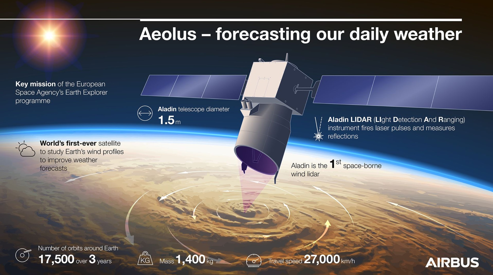

How is climate change measured and modelled? In this article, Indraji will explore the current methods used to model the climate followed by some future advances that may pave the way for more accurate modelling and predictions.
By Indraji Wanigaratne
|
9 Mar 2021
|
15 min
Climate modelling is now a mature discipline, approaching its fortieth birthday. The largest factor that has driven the development of climate modelling techniques has been the increasing influence of human activity on the climate system, leading to climate change. This necessitates increasingly accurate models in order to account for said change, and also to prepare for it [1]. In this article, we will explore the main current methods of climate modelling and then look at what improvements may be on the horizon with future methods.
Current Methods
Why are models used in climate science, or in scientific fields generally? First of all, models, in general, are used in situations where we need to work through complicated problems and understand complex systems [2]. A complex system is a system that has many components, generally too many to look at analytically. Generally, the complex systems are non-linear in nature, meaning that changing the input of the system does not proportionately increase the output [3]. They also have components that are coupled to each other, meaning that changing the value of one component often changes some other component or components, and sometimes even the whole system [4]. Since the climate system is generally incredibly complex, computational models have long been used in order to understand how it works, to test possible theories of how the climate system might work and test possible solutions and interventions for problems such as climate change [5][6].
Climate models are generally based on physical processes that occur in either the atmosphere, the lithosphere, the hydrosphere or the biosphere [7] . These correspond to air, rocks, water, and life respectively. Climate models are generally known as General Circulation Models (GCMs), since they often represent how the processes circulate matter and energy between different parts of the Earth system [8]. These processes are generally quantified and represented as mathematical equations, where they are then used in the GCM [9].
The process for building, and subsequently running, a climate model is as follows [10]. Firstly, the Earth system processes that are to be represented in the climate model are identified. Secondly, these processes are then quantified and represented with mathematical equations so that they can be inserted into the GCM. Thirdly, variables are set to represent the initial conditions and then varied to play out possible future scenarios [11]. The last thing is then to repeatedly solve the mathematical equations in the model using powerful supercomputers. Since climate models are generally incredibly large and complex, they tend to stress the limits of whatever computational power is currently available. Therefore, any improvements in the state-of-the-art when it comes to computing is generally reflected as an increase in the accuracy and a decrease in the runtime of state-of-the-art climate models [12].
In climate models, the Earth is generally represented as a three-dimensional grid of cells [13]. Relevant processes for the lithosphere, biosphere, atmosphere and hydrosphere are modelled in each cell. Then, these processes are passed to neighbouring cells in order to model the exchange of matter and energy between cells over time [14]. In order to increase the level of detail in the model, it suffices to reduce the size of the grid cells, thereby increasing the number of total cells to be simulated in the model. This also increases the level of computational power required for the model, meaning that taking practical limits on computational power into account, the minimum size of a grid cell is always somewhat limited. Climate models also include the element of time via a time step, which time steps the simulation forward in time and updates it [15]. In order to increase the temporal resolution of a model, it also suffices to decrease the time step. Again, just like with spatial resolution, the minimum possible time step is generally fixed by the upper bound of computational power [16].
Once climate models have been built, they can then be tested via a process known as "hind-casting" [17]. The model is run from the present time, backwards into the past. The results of the model are then compared with observed climate and weather conditions, in order to see how well they match. This allows scientists to check and quantify the accuracy of the model. If necessary, the mathematical equations in the model can be revised in order to increase accuracy. Climate models can also be compared with the results from other models from other scientific teams and labs. This allows for another level of verification and testing, meaning even more accurate climate models.
Once a climate model has performed well in hind-casting, results for simulating the future climate are also assumed to be valid. These models can then be used for climate forcing, where a certain future scenario can be simulated [18]. A scenario is essentially a story about how certain variables in the model will evolve over time. This includes such possible variables as how the land will be used, how economies will evolve, and the atmospheric conditions that would result, for each storyline and associated scenario. This allows us to explore possible futures, and also to explore possible solutions for such futures.

In order to model the climate accurately, high-quality global observations and parameterisations are required. Since some processes cannot be described explicitly and analytically, they are captured empirically and represented in the climate model [19]. As noted above, there is unending pressure to improve the spatial and temporal resolution of climate models, due to the rapid onrush of climate change.
Since the climate system is inherently such a large and complex system, many disciplines are now involved in the framework of climate modelling. Most current climate modelling efforts involved thousands of professional climate modellers, across many disciplines. In order to evaluate the large variety of models being generated by this veritable army of climate modellers, evaluation and intercomparison methodologies were developed in the 1990s by individual groups [20]. These began with simple eyeball comparisons of various models and proceeded to detailed intercomparison programs and complex statistical techniques. Now, making comparisons between different models and then using them to make holistic comparisons of various models is now commonly done in climate modelling.
Lastly, you may be wondering how exactly climate models differ from weather prediction models, given that they seem to be so similar on the surface. The first atmospheric GCMs were developed from numerical models for short-term weather forecasting, with a smooth transition taking place from weather forecasting to climate prediction. In fact, many of the early pioneers of climate modelling come from numerical weather prediction [21]. However, modern-day climate models differ from weather models significantly, in both intended purpose as well as construction. Weather models are used to generate weather forecasts that provide a detailed picture of the expected daily sequence of conditions from the present [22] . However, climate models are probabilistic. They indicate areas with higher chances to be warmer or cooler, or wetter and drier than usual. Climate models are also generally based on global patterns in the ocean and the atmosphere, and records of the types of weather that occurred under similar patterns in the past.
Future Methods
When discussing the future of climate modelling, there are several possible future additions and avenues that we need to consider. Of these additions, cooling by atmospheric aerosols and their modelling is one major addition, at least when considering the modelling of the atmosphere [23]. Regional-scale changes to the Earth's surface are also beginning to be made, mostly around desertification, re- and de-forestation and urbanisation [24]. Climate modelling methods of the future will need to include all of these aspects and facets. This is due to the fact that these regional-scale changes are greatly modifying the surface characteristics of large areas, necessitating their inclusion into next-generation climate models.
Future modelling methods will likely see an increase in the computational resources devoted to climate modelling [25]. One aspect of future climate that also needs to be brought up is the continuing synergy and tension between simpler and more complex model types. Although complex models, such as GCM's offer the most accuracy, they also come at a large computational cost. Using simpler models in certain areas, can take the computational load off of the modelling and simplify the task at hand.
There is still work to be done to improve numerical climate models. In these next subsections, we will explore technologies that may, in the future, catalyse giant leaps in climate modelling by unlocking further computational speed or simply approaching the problem from a different angle.
Physics-informed Machine Learning
In physics-informed machine learning, physics and domain knowledge is systematically integrated into ML models [26]. Machine learning provides novel and powerful ways of accurately and efficiently recognising complex patterns. However, off-the-shelf ML models do not obey the laws of physical systems, and they do not generalize well to scenarios where they have not been trained. This makes it difficult to use a pure machine learning approach when it comes to applying machine learning to climate modelling. Physics-informed machine learning provides a way around this. However, there are significant scientific, diagnostic, computational and resource challenges for developing truly robust and reliable physics-informed ML models for weather and climate [27]. This means that until recently this approach proved unfeasible. However, the developments in high-performance computing, deep learning and data science, may represent a path forward.
Digital Twins
Digital Twins are very accurate virtual models of a system constrained by available observations of the system and the laws of physics [28]. These models can then be run forward in time with certain conditions to see what the outcome would be. Digital twins in the case of climate modelling would create highly accurate models of the Earth. The first digital twins for the prediction of extreme climates, as well as climate change prediction, will start production in 2023. However, building such a digital twin will require coordinated development across many tens of disciplines. This digital twin architecture is a step change because it combines simulations and observations at much greater spatial realism. It can monitor, predict and account for natural and human perturbations. It can also constrain missing physics through observations and machine learning, and can also evaluate the information content of observations, and optimise entire observation networks. Digital twins are also generally accompanied by interactive tools to allow users to intervene and perturb the digital twin workflow [29]. This allows the digital twin to be a data assimilation tool that would continuously cycle real-time, highly detailed, high-resolution Earth system simulations and ingest observational information from all possible instruments. They also allow us to include the human dimension from non-technocratic approaches.
Satellite Weather Data
Utilising satellite weather data is another way forward for climate modelling. Observations from space have been made for over 40 years, and have contributed massively to advances in many aspects of climate science [30]. Attempts to use data is hampered by the lack of homogeneity and continuity, as well as an insufficient understanding of the products and of their uncertainties. Better predictions require better models, which require reliable observations to evaluate them. This means that there is a need for stable, long-term and consistent data records for budget closure studies. These data records, as well as possible new insights, are made feasible by unparalleled global- and fine-scale spatial coverage of satellite observations. The short duration of the observations, however, leads to large uncertainties in the data obtained. Future work and future should be positioned to make better use of remote sensing in climate change studies [31].
Pooling Computational Resources
Pooling computational resources refer to a specific change in how climate models are constructed, and by whom. In this approach, a few multinational climate modelling centers are established in order to pool human and computational resources together [32]. This would involve dedicated supercomputing facilities, as well as the focused expertise of multinational teams of scientists. However, the requisite computing power for running very high-resolution climate models will not be available in climate institutes until the 2030s at the very earliest. Assessing the reliability of predictions will take anywhere from several years to many decades.
Quantum Computing
Quantum computing in particular seems to be promising, given that it offers a massive performance advantage for large-scale simulations. A quantum computer is a device that uses quantum phenomenon to perform computation [33]. For those interested in the mechanism behind a quantum computer you should watch this video.
Optical Computing
Optical computing is another distinct computational frontier that may prove promising for climate modelling [34]. Instead of using electrons or electricity for computation like a standard computer, photons produced by laser or diodes are used instead. This promises a higher bandwidth than the electrons used in conventional computers.